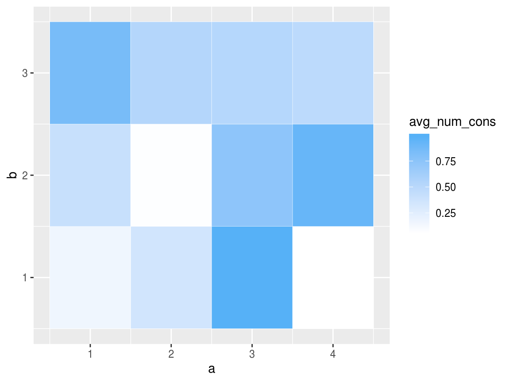
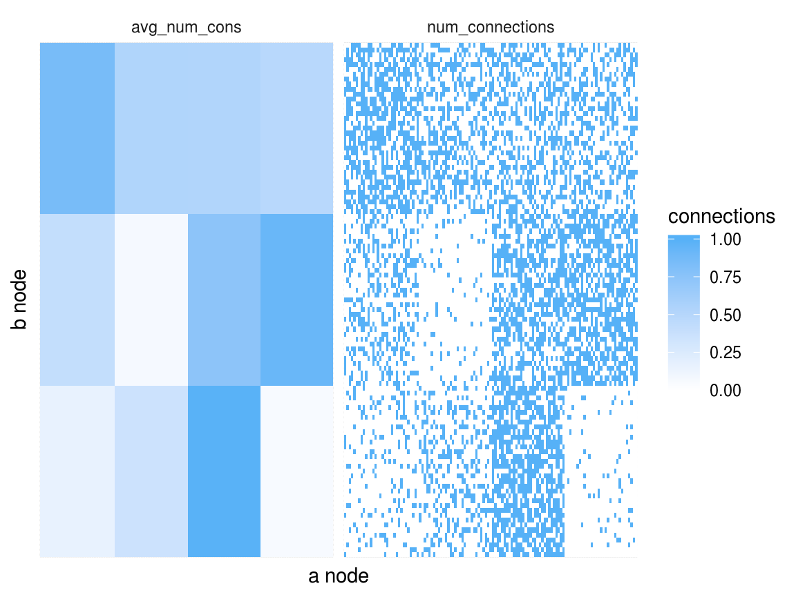

simple_simulation.Rmdlibrary(bisbmsim)
library(tidyverse)
#> ── Attaching packages ───────────────────────────────────────────────────────── tidyverse 1.2.1 ──
#> ✔ ggplot2 3.2.1 ✔ purrr 0.3.2
#> ✔ tibble 2.1.3 ✔ dplyr 0.8.3
#> ✔ tidyr 0.8.3 ✔ stringr 1.4.0
#> ✔ readr 1.3.1 ✔ forcats 0.4.0
#> ── Conflicts ──────────────────────────────────────────────────────────── tidyverse_conflicts() ──
#> ✖ dplyr::filter() masks stats::filter()
#> ✖ dplyr::lag() masks stats::lag()
library(purrr)This document represents the first steps of the package and an example of a super simple simulation.
First we need to setup basic parameters corresponding to model
N_a <- 125 # Number of nodes of the a type
N_b <- 105 # Number of nodes of the b type
K_a <- 4 # How many blocks of a type nodes are there
K_b <- 3 # How many blocks of the b type nodes are thereIn the future these variables will be chosen, not generated.
b_a <- assign_group_membership(N = N_a, K = K_a) # Block membership for each a node (automated in future)
b_b <- assign_group_membership(N = N_b, K = K_b) # Block membership for each b nodeLook at what our Lambda looks like real quick.
ggplot(Lambda, aes(x = a, y = b)) +
geom_tile(
aes(fill = avg_num_cons),
color = 'white'
) +
scale_fill_gradient(low = "white", high = "#56B1F7")
all_node_pairs <- expand.grid(
a = 1:N_a,
b = 1:N_b
) %>%
# Grab the group membership for each node
mutate(
a_group = b_a[a],
b_group = b_b[b]
) %>%
inner_join(
Lambda,
by = c('a_group' = 'a', 'b_group' = 'b')
) %>%
mutate(
num_connections = rpois(n(), lambda = avg_num_cons)
)Plot results and compare with the generating lambda matrix.
all_node_pairs %>%
mutate(num_connections = ifelse(num_connections >= 1, 1, 0)) %>%
gather(key = 'type', value = 'connections', avg_num_cons, num_connections) %>%
arrange(a_group, b_group) %>%
ggplot(aes(x = reorder(a, a_group), y = reorder(b, b_group))) +
geom_tile(aes(fill = connections) ) +
facet_wrap(~type) +
scale_fill_gradient(low = "white", high = "#56B1F7") +
labs(
x = 'a node',
y = 'b node'
) +
theme_minimal() +
theme(
axis.text = element_blank()
)